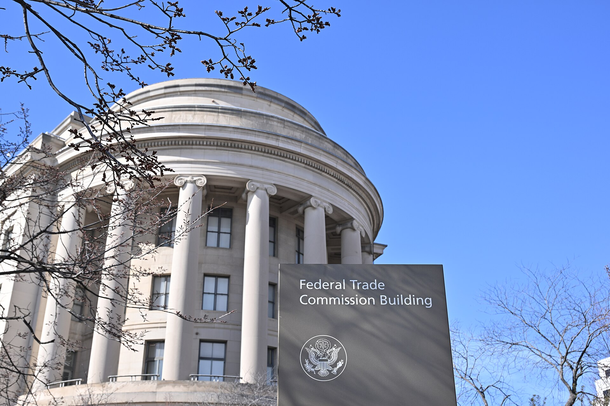
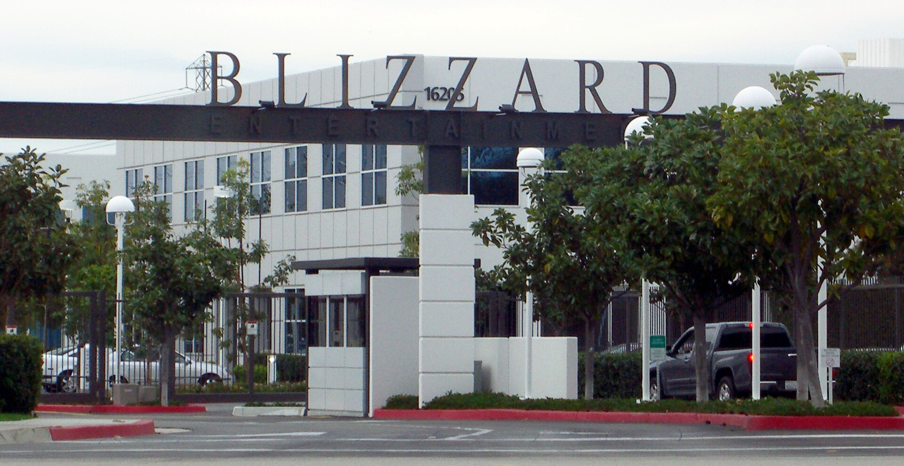

Vol. I · No. 111 · Monday, September 14, 2026 · 12 items · ~15 min read
The labs asked the world to slow down, and by Monday the White House, the Nasdaq and the Tokyo open had each answered separately.
AI · San Francisco and London
The labs that asked for a slowdown had been drafting the rules since July
Demis Hassabis of DeepMind, Dario Amodei of Anthropic and Sam Altman of OpenAI with Rishi Sunak in Downing Street, May 2023. The three companies have been meeting privately on standards since July of this year. — No 10 Downing Street / Wikimedia Commons
The Washington Post and reported Monday that Anthropic, OpenAI and Google have been meeting since July in a working group aimed at a shared, industry-led standards body for artificial intelligence. Dario Amodei is described as driving the effort, which centres on technical testing and of frontier models. Demis Hassabis floated the idea publicly on 14 July, proposing a self-regulatory organisation based in the United States and said it should be standing before the end of the year. Nothing has been finalised. No rulebook exists and no entity has been incorporated.
The sequence is the story. Amodei published an essay, We Must Pace the Frontier, on Saturday, proposing that frontier labs accept independent outside evaluators with to internal safety processes, that democratic states agree on common safety standards, and that those standards be coordinated even with authoritarian governments on security questions. Sam Altman, Hassabis and Elon Musk each endorsed it on X over the weekend, and Altman pledged to match Anthropic's commitment on evaluator access. Three companies that compete for the same engineers, the same chips and the same enterprise contracts reached the same public position within hours of one another, after two months of private meetings that none of them had disclosed.
They disagree on the part that decides everything. Anthropic leans toward partnership with government. OpenAI favours voluntary industry rules while backing some state legislation. Altman told an internal all-hands last week that the companies will probably have to build the body themselves, without federal backing, which is less a preference than a reading of Washington: talks inside the Trump administration on a federal AI framework have stalled.
"It is unacceptable to be taking like a 10% chance of killing everybody by the end of the decade."
— Sam Altman, to Fortune, September 12
Why it mattersA standards body designed by the three firms it would govern, formed because Congress will not act, is self-regulation with the regulator's chair left empty. Whether it acquires teeth turns on the governance split the labs have not resolved, and that argument is running privately while the public message stays unanimous.
Trump rejects the slowdown, saying whoever wins AI wins
Trump gave the labs his answer on Sunday. "We're leading China in AI," he told reporters at his Doonbeg golf resort in Ireland. "We're the most sophisticated country in the world, and frankly, I want to keep it that way, because whoever wins AI wins." It was his first public response to the pacing statements Amodei, Altman and Musk made over the weekend, and he offered nothing in the way of a concession to them.
The position is continuous with what his administration has already done rather than new. In January the Commerce Department moved advanced AI chips bound for China off a and onto case-by-case review at the . Xi Jinping is due in the United States later this month for a summit at which AI is expected on the agenda, which gives the collision a date: the three largest American labs have told the public they want to slow down, and the government that would have to make that binding has said the opposite on the record.
Why it mattersEvery commitment the labs made this weekend is voluntary, and the only party that could convert it into law has now declined in public. Whatever they build will have to survive an administration that treats pace as the strategy rather than the risk.
Brent holds near $107 with the Fed two days out and the Hormuz bypass shut
Drones launched from Iraqi territory struck Saudi Arabia's on 10 and 11 September, and Riyadh shut the line. It normally moves 4 to 5 million barrels a day, close to 5% of world supply, 1,200 kilometres to the Red Sea terminal at . The was already effectively closed. Brent rose 2.82% to $107.56 on the shutdown and traded as high as $107.41 again on Monday before easing to $107.37, leaving crude up almost 9% on the week. West Texas Intermediate sat at $102.52. The Nikkei 225 closed down 0.8% at 63,492.99 and the Kospi fell 3.3% to 6,684.37.
Closing the pipeline is the more consequential fact than the strikes that caused it, because it removes the workaround at the moment the thing being worked around is itself shut. That is why the risk premium is sticking rather than fading on a single session. The Federal Open Market Committee meets Wednesday with an oil-driven inflation impulse running against a labour market that had argued for a hold. Reported hike odds are genuinely unsettled: readings across outlets this week ranged from the high fifties to the mid eighties in percentage terms depending on the snapshot. The ten-year was near 4.95% late last week, the two-year near 4.61%, the thirty-year at 5.36%.
Why it mattersEvery deal priced this autumn discounts off a curve the Fed is about to move, and the input moving it is a pipeline that no rates model contains. A desk reading the tape without reading the map will misprice the week.
The safest company in the industry goes looking for public money.
AI · New York
Anthropic picks Nasdaq for a listing that could be worth $2 trillion
The Nasdaq MarketSite in Times Square. Anthropic has selected the exchange for a listing it hopes to market from mid-October. — Wikimedia Commons
Anthropic has chosen Nasdaq for its initial public offering, Business Insider reported Sunday, with Bloomberg and Reuters confirming the selection the same day. The offering could value the company at as much as $2 trillion, against the $1.75 trillion SpaceX carried into its own Nasdaq debut in June, and people close to the process describe a raise at least as large as that one. Marketing could begin in mid-October, with a close possible before the midterm elections. The exchange decision also settles , which is the quiet half of the choice. Anthropic has not publicly confirmed either the venue or a timetable.
The numbers underwriting the figure are newer than the growth. Anthropic told prospective investors that second-quarter revenue exceeded $11.5 billion, more than fourteen times the year-earlier level and up from $4.73 billion in the first quarter, with gross margins above 80% before and training costs, and positive adjusted operating income for a second consecutive quarter. Profitability is what a banker points at to defend a $2 trillion mark; growth alone gets you to a private round. The structure underneath is less conventional. Anthropic is a Delaware whose holds board appointment rights that public buyers would not acquire.
Why it mattersThe company arguing hardest for slowing down is about to ask public markets to price its speed. Commitments made in a Saturday essay become risk factors in a prospectus, and a pacing pledge disclosed to investors is a promise with a securities consequence attached to breaking it.
A safety statement moved more money on Monday than most earnings do.
Markets · Tokyo
SoftBank sheds a tenth of its value after Altman pushes the OpenAI listing to 2027
The Tokyo Stock Exchange. SoftBank Group fell 11.2% on Monday, the largest single loss among Asia's AI-linked names. — Wikimedia Commons
fell 11.2% in Tokyo on Monday after Sam Altman told Fortune, in an interview published Saturday, that OpenAI will not list this year. Asked directly whether 2026 remained possible, he said "not 2026," calling it an "ill-advised moment" to go public. The eventual target is a valuation near $1 trillion, against the roughly mark set in March. Chief financial officer Sarah Friar gave a separate reason, citing market volatility and a weak . SK Hynix fell 5.3% and Samsung Electronics 2.8%.
The American premarket sorted the damage by tier. Nvidia fell more than 2% and Meta and Amazon more than 1% each, while dropped 16.97%, AXT 9.84% and Sandisk 8.92%, with Coherent, Aehr Test, Lumentum and Micron off 5% to 7%. Investors are pricing a slower pace of compute purchasing rather than weaker end demand, and they are putting the leverage where it actually sits. "It probably reflects the possibility that AI development may be slowed by regulators to try to avoid the worst case outcomes that Anthropic and Open AI have discussed," Dan Baker of Morningstar said.
Why it mattersWhat would have been the largest listing in history sliding out of 2026 empties a calendar the underwriting desks have been modelling around. Two reasons are now on the record for the delay, safety and market conditions, and which one appears in the eventual prospectus will say which one was real.
Euronext's chief reopens the Deutsche Börse question and moves both stocks 2%
"One deal that would make sense is the merging of the exchanges business," told the Financial Times in an interview published Monday. He said no talks are taking place, described the combination as capable of producing European market infrastructure with "planetary scale," and acknowledged it would face significant antitrust hurdles. Shares in both and Deutsche Börse rose about 2%. Boujnah made a narrower version of the same point at an Italian parliamentary hearing in May, calling a merger logically compelling but unlikely soon, and counting three previous attempts that failed.
Read the coverage rather than the headline. Some wires ran the remarks as reviving merger talk and others as ruling a merger out in the near term, and both are faithful to different halves of the same quote, which is a useful reminder of how much a trade headline can be doing before you reach the sentence it came from. There is no transaction here: no terms, no advisers, no timetable. What gives this round more durability than a CEO aside is the politics around it, with Brussels citing exchange consolidation as evidence its is working.
Why it mattersEurope's answer to American listing dominance keeps arriving as an interview rather than an agreement, and antitrust is the reason. A combination of the two largest operators would put most of continental Europe's listing venues under a single owner, which is the objection and the point at the same time.
The weekend's safety pledge acquires an antitrust problem by Monday.
Law · Washington
A pacing pact among three rivals runs into Section 1

The Federal Trade Commission's headquarters in Washington. Neither the FTC nor the Justice Department has said anything about the labs' weekend commitments. — Wikimedia Commons
The first serious objection to the slowdown came from inside the administration. , co-chair of the President's Council of Advisors on Science and Technology, posted on Sunday that OpenAI and Anthropic hold a duopoly over frontier AI by market share, revenue growth and model capability, and that they are pretending to need antitrust exemptions or a new approval process in order to restrain themselves. He called the plan a bid for regulatory capture, arguing that rules written by incumbents would raise a bar smaller and open-source rivals cannot clear. , a former Federal Trade Commission commissioner, drew the line more precisely. Antitrust law does not stop AI companies coordinating to keep AI from hurting people, he wrote, but it "does absolutely prevent AI companies from organizing to prevent the entry of cheaper, upstart rivals because the bigger companies are burning cash and failing to achieve sufficient profitability." Altman answered on Monday that OpenAI would support a federal framework but does not need to wait for legislation or an exemption to act alone.
Bedoya's sentence is stated plainly. An agreement among competitors to restrain output or capability draws scrutiny whose severity depends on its character, and a restraint that also raises entry costs for newcomers compounds the exposure, while a narrowly drawn safety protocol has an defence available to it. The FINRA analogy is where the gap opens: that body's protection flows from Securities and Exchange Commission oversight and the requirement that goes with it, and no statute supplies that footing to a private AI body. Sacks made the point without meaning to. If the labs did not need anyone's permission to slow down on their own, then unilateral restraint is the safe path and the coordinated version is the one with a legal question attached.
Why it mattersThe argument now has a shape a court could hear, and it arrives while Anthropic markets an October listing. A capability-pacing arrangement among the three dominant labs is the kind of thing that becomes a disclosed risk factor well before it becomes a complaint, and the disclosure is the part that lands first.
The only table that could have reopened the strait folded before it was set.
The World · , Oman · cross-spectrum LLC
Oman calls off the first Iran-Gulf meeting of the war a day before it opened
The Gulf of Oman and the Strait of Hormuz at night, photographed from the International Space Station. The Salalah meeting was convened to negotiate a temporary shipping lane through it. — NASA / Wikimedia Commons
"In the interests of consensus the regional meeting set for tomorrow in Salalah has been postponed," Oman's foreign minister, , wrote on X on Sunday. The meeting would have been the first time senior officials from all six states sat with Iran since the war began in February, and its single purpose was a temporary shipping lane through the strait. Delegations were expected from Iraq, Saudi Arabia and Qatar, after weeks of Omani shuttling between capitals. There was no American participation by design. Iran's said the delay came at the request of some regional states and was a joint decision by Tehran and Muscat.
The drone strikes on the Saudi pipeline on 10 and 11 September, along with attacks on vessels near Qeshm Island, are reported to have contributed to the collapse. The asymmetry the word consensus is covering is not subtle: Riyadh has little reason to negotiate an alternative route with Tehran while it is still being hit, and Oman has no leverage to make it do so. That leaves no active channel for reopening the strait, and none scheduled.
Why it mattersThe crude price in the Front assumes this table reconvenes at some point. It has just been demonstrated that nobody can say when, and the premium has to carry that until somebody can.
US officials tie Chinese satellite imagery to the strike that killed three Americans
The Wall Street Journal reported that Chinese entities supplied Iran with high-resolution satellite images of in Jordan before the 17 July missile strike that killed three American service members. Officials did not name the entities and stopped short of alleging direct Chinese government involvement, while describing the finding as the clearest evidence yet of Chinese support for Iran during the war. Washington sanctioned three firms in May, , for providing, collecting or publishing imagery Iran could use against US forces.
Trump was asked about it on Sunday aboard Air Force One and declined the escalation. "You know, when they say that China spies on us, I say you're right, and we spy on them too," he said. That gap, between officials calling this the clearest evidence of Chinese support and a president treating it as ordinary, is the actual development. The state-run Global Times quoted a Chinese military expert calling the accusation flimsy and accusing US officials of seeking excuses for setbacks, which is Beijing's denial rather than any independent account.
Why it mattersSanctioning three imagery vendors in May and tying that same channel to three American deaths in September is the export-control argument acquiring a body count. Whether Washington treats it as one is now a question about the response, not the evidence.
Source: Middle East Eye ↗ · Also reported by: RFE/RL (syndicated). The original reporting is the Wall Street Journal's; downstream outlets are carrying it rather than confirming it independently.
The World · Nizhnekamsk, Russia · single-tier coverage: C
Ukrainian drones reach a refining hub 1,200 kilometres from the front
Drones struck the Nizhnekamsk petrochemical complex in Tatarstan overnight into Sunday, roughly 1,200 kilometres from the Ukrainian frontier. The targets were Tatneft's TANECO refinery, one of Russia's five largest at more than 16 million tonnes a year, the TAIF-NK refinery at more than 7 million tonnes, and Nizhnekamskneftekhim, a subsidiary and a major synthetic-rubber producer. A regional official, Radmir Belyaev, confirmed an ignition "at one of the city's enterprises." The same night drones hit the Slavyansk ECO refinery in Krasnodar Krai, already struck in April and June. Ukraine's claimed the operation: "a key oil refining facility and the company's tank farm, which fuel the criminal war against Ukraine, were struck."
The campaign is aimed at the chemical supply chain and not only at fuel. Strikes on 12 September hit KuibyshevAzot at Tolyatti, which Kyiv says accounts for about half of Russia's caprolactam and three-quarters of its tyre cord, and ; the Azot ammonium-nitrate plant at Berezniki was hit on the 11th. Ukrainian long-range drones have now struck Russian refineries more than seventy times since the start of the year, and at least seventeen Russian regions have imposed fuel rationing. Russia sent 453 attack drones the same night, hitting the Usatove power substation near Odesa, a Nova Poshta logistics centre and a complex near Boryspil.
Why it mattersSeventeen regions rationing petrol is the first durable macroeconomic effect either side's deep strikes have produced. It is also the figure that decides whether a negotiated pause has anything to trade against, which is why Kyiv is publicising the count.
Two game-to-screen licences in a fortnight, and no consideration disclosed on either.
Entertainment · Anaheim · BlizzCon, 12–13 September
Blizzard books Diablo V for 2029 and hands Diablo to Netflix

Blizzard Entertainment's campus in Irvine, California. The studio announced two flagship titles three and four years out. — Wikimedia Commons
Blizzard used Saturday's BlizzCon keynote to announce Diablo V for spring 2029, picking up after the fall of Sanctuary, and an unnamed open-world StarCraft shooter for spring 2030 led by . World of Warcraft: Forever, a third way to play alongside the modern game and Classic, arrives 4 November with a beta from 17 September. The item that carries past the weekend came from Blizzard president , who confirmed a Diablo animated series in development at Netflix. No premiere window, episode count, studio or cast was disclosed, and the arrangement revives screen plans that had stalled amid earlier legal friction between the two companies.
It is the second such licence in a fortnight. Eight days earlier Xbox confirmed it would publish ' Physint after PlayStation dropped it in June, in an agreement written to cover film and television alongside the game. Neither deal carries public consideration, which is the part worth noticing: Microsoft is converting an acquired catalogue into screen rights and disclosing none of the terms. The announcements also land against , with the tracker Satvat raising its 2026 industry layoff forecast to 14,666 in early September against 9,175 in 2025. Announcing 2029 and 2030 titles during a stretch of studio closures reads to the trade press as a roadmap shown to investors rather than to players.
Why it mattersTwo game-to-screen licences inside two weeks with no public terms on either sets the comp privately, and the next studio negotiating an adaptation will be arguing against numbers it cannot see. The pattern is the transaction here, not the trailers.
Practical Magic 2 opens at $30 million and ends Spider-Man's six-week run
Warner Bros and 's Practical Magic 2, with Sandra Bullock and Nicole Kidman, opened to an estimated $30 million domestically from 4,146 theatres, the bottom of Warner Bros' own $30 million to $35 million range. It added about $16 million from 77 international markets for roughly $46 million worldwide and took a . The weekend ended Spider-Man: Brand New Day's six consecutive weekends at number one. Angel Studios' Runner opened to $6.7 million from more than 2,500 theatres. For scale, the 1998 original grossed $28.4 million domestically across its entire run.
Read the number carefully, because three of them are circulating. Variety's Friday-tracking story ran the debut at $28 million while Deadline, the Hollywood Reporter and the AP reported the $30 million Sunday estimate, and Monday's Comscore actuals will move it again. Sunday figures are studio-supplied projections, not results. The $30 million itself is unremarkable against , which is the point. A legacy sequel with two stars and a nostalgia asset landed exactly where a Bullock picture lands without either.
Why it mattersA studio missing the low end of its own guidance is the month's second data point on adult-skewing nostalgia IP. Whichever of the three figures survives into the trades is the one a distributor will quote back across the table on the next one.